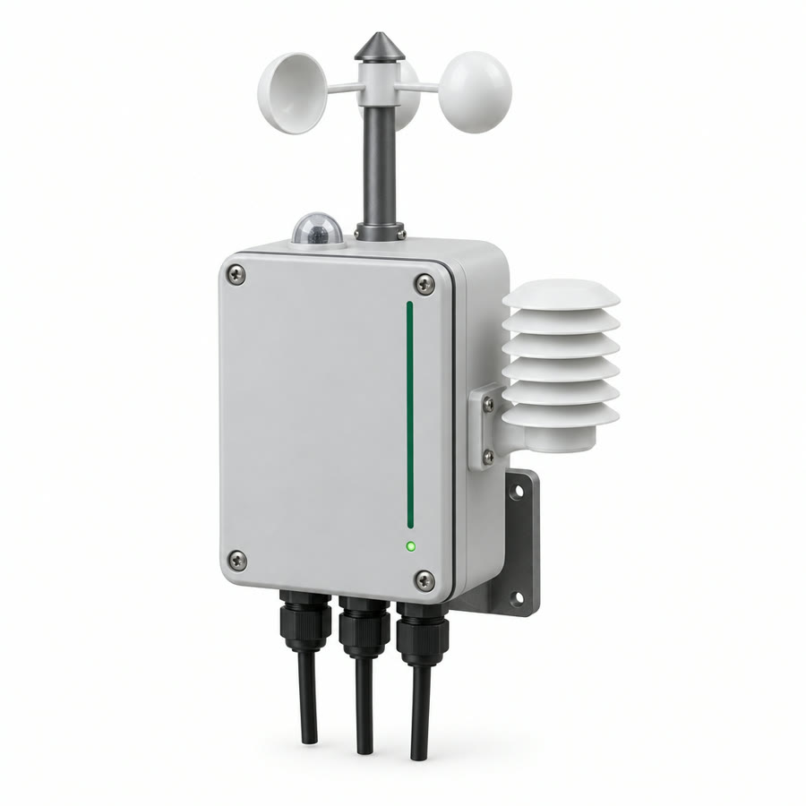
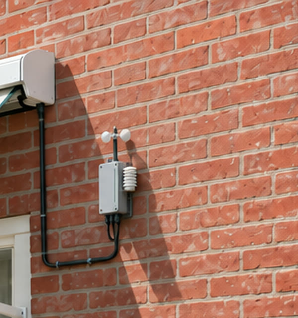

Summary
Luwte is a model-scale motorized awning (zonnescherm) that looks after itself. A battery-powered ESP32 node measures wind, light and temperature and rolls the awning in or out. If a gust arrives, the node retracts the awning on the spot, without waiting for the network.
Slower decisions are made in the cloud. The backend receives the measurements over LoRaWAN through The Things Network, combines them with the weather forecast, and sends commands back. It extends the awning in the morning of a hot day, before the house heats up, and keeps it in when a storm is forecast. A web dashboard shows the data and allows manual override. The node is designed for low power: it sleeps between measurements, powers the motor only while moving, and runs on a protected 18650 cell, with a small solar panel in phase 2.
Problem and context
Awnings are exposed parts of a house, and they have two recurring problems:
- Wind damage. An awning left out while nobody is home can be torn off by one strong gust. Existing wind sensors only react to the moment and ignore the forecast.
- Too late against heat. People extend the awning once the room is already warm. Shading helps most before the sun hits the façade, and that needs the forecast and the sun's position.
Awnings are mounted outside, often without a power cable and out of WiFi range. That makes them a natural fit for a battery- or solar-powered LoRaWAN node.
What it does
| Situation | Decided by | What happens |
|---|---|---|
| Gust above threshold | Node · reflex | Retracts immediately, then reports the event |
| No cloud contact for 6 h | Node · fail-safe | Retracts and waits for contact |
| Hot, sunny day forecast | Cloud · reasoned | Extends in the morning when the sun reaches the façade |
| Strong wind or rain forecast | Cloud · reasoned | Keeps the awning in and lowers the node's gust threshold |
| User override on the dashboard | Cloud → node | Moves to the requested position; auto mode paused |
The split follows from the network. LoRaWAN Class A delivers a command to the node only right after the node's next uplink. Forecast decisions can wait minutes. A gust cannot.
Design
How the sensor unit looks, and how it sits next to the awning. These are AI-generated concept visuals (GPT Image 2.5 and Kling 3.0), not photos of a finished build; dimensions follow the parts list.


Download the 3D model (.glb, 43 MB). For presentations only: it's a visual mesh, not a CAD model for 3D printing.
How it meets the project requirements
| Requirement | Luwte |
|---|---|
| Measurement | Wind speed (cup anemometer), light (BH1750), outdoor and indoor temperature, battery voltage, awning position (encoder) |
| Actuation | DC gear motor via the TB6612FNG driver from the kit; endstops for homing |
| Via a gateway to the cloud | LoRaWAN → TTN gateway → The Things Network → MQTT → backend |
| Processing and actuation back | Forecast rules in the backend → LoRaWAN downlink → motor moves |
| Local vs cloud decisions | Gust retract and fail-safe on the node; forecast logic in the cloud |
| Power | Deep sleep, motor supply switched off when idle, adaptive reporting, protected 18650 + solar, measured energy budget |
Architecture
LoRaWAN messages
Uplink payload, 13 bytes
The flags byte holds position state, endstops, mode and "reflex fired". Light is a plain uint16, which fits the BH1750 exactly: it saturates at 65 535 lx.
Airtime per 13-byte uplink, under TTN's fair-use limit of 30 s uplink airtime per day. The node therefore adapts its report interval to its data rate, and reports sooner when something changes.
Downlink commands, max 10 per day under TTN fair use
| Command | Payload |
|---|---|
0x01 Set position | 1 byte, 0–100 % |
0x02 Set gust threshold | km/h × 10, uint16 |
0x03 Set report interval | minutes, 1 byte |
0x04 Set mode | auto / manual / hold |
Power design
- Deep sleep between measurements; onboard OLED and LEDs switched off.
- Wind sampling experiment: short sampling windows (for example 3 s every 30 s) versus continuous pulse counting on the ESP32's ULP coprocessor. We measure both and compare energy use against gust reaction time.
- Motor supply switched off when idle: boost converter disabled, TB6612FNG in standby.
- Report by exception: regular heartbeat, plus an extra message only when wind, position or mode changes.
- Energy source: one protected 18650 cell (the TTGO has no battery protection). A small solar panel with its own charger comes in phase 2. The TTGO's onboard charger only runs from USB, so the two charging paths are never used at the same time.
- Measured budget: sleep current with a µA meter, energy per awning movement with an INA219, adding up to a daily energy budget and expected battery life.
Provisional target, fixed after the baseline measurement in week 5: at least 7 days on one 18650 without sun, and energy-neutral on a sunny day with the solar panel.
Sensor accuracy and calibration
| Sensor | Plan |
|---|---|
| Anemometer | 3D-printed cups, one hall-sensor pulse per revolution. Find the pulses/s → km/h factor by calibrating against a handheld reference anemometer. Report the average and the maximum 3-second gust (the meteorological gust definition). |
| BH1750 | 16-bit, up to 65 535 lx, while direct sun can exceed 100 000 lx. Use a diffuser, and use light mainly as "sun on the façade: yes/no", cross-checked with forecast radiation. |
| BME280 | Place in a small radiation shield (a mini Stevenson screen) so sunlight doesn't heat the sensor. |
| DS18B20 | ±0.5 °C, 12-bit resolution (0.0625 °C). |
| Battery voltage | ESP32 ADC is non-linear: calibrate with the ESP-IDF ADC calibration and compare against a multimeter. |
| Position | Count encoder pulses; home on the endstop at boot. |
Tools
| Firmware | C++ with PlatformIO (Arduino framework for ESP32), LoRaWAN stack MCCI LMIC or RadioLib |
| Network | The Things Network (v3), OTAA join |
| Backend | Python (MQTT client, Open-Meteo API, rules engine), time-series database, Docker |
| Dashboard | Web app with charts and override controls |
| Collaboration | Git/GitHub |
Success criteria
- A gust above the threshold starts retraction within 5 s, including with the gateway switched off.
- A cloud command is executed within one report interval; final position within ±5 %.
- Wind speed within ±10 % of the reference anemometer after calibration.
- Energy budget measured and documented; battery life meets the target set in week 5.
- The dashboard shows live and historic data next to the forecast, and override works.
- The fail-safe retracts the awning after 6 h without cloud contact.
Planning
| Week | Milestone |
|---|---|
| 3 | Proposal approved, parts ordered (Pololu first) |
| 4 | Risk 1 TTGO joins TTN (OTAA), uplink visible, downlink received |
| 5 | Risk 2 Baseline sleep current measured; anemometer pulse counting works |
| 6 | Backend skeleton: TTN MQTT → decoder → database; Open-Meteo fetch |
| 7 | Architecture and payload frozen; all parts in; model design sketched |
| — | Autumn break |
| 8–9 | Motor, encoder and endstops; model awning built; gust reflex and fail-safe |
| 10–11 | Forecast rules and downlinks; dashboard with override |
| 12 | Power optimisation, solar charging, energy measurements |
| 13 | Calibration, testing against the success criteria, paper |
| 14 | Presentation, demo rehearsal, do's and don'ts |
Task division
Firmware, sensors, motor control, LoRaWAN, power.
Paper section: node design and power.
TTN integration, backend, forecast rules, dashboard.
Paper section: cloud processing and dashboard.
Shared: architecture, payload format, model build, testing, paper, presentation.
Risks
| Risk | Mitigation |
|---|---|
| No TTN coverage where we test | Check TTN Mapper; test at the Fontys gateway; fall back to a TTN indoor gateway |
| Class A downlink delay | Time-critical logic runs on the node; the cloud sends settings, not real-time control |
| Dev board sleep current higher than the bare ESP32 | Measure in week 5; disable the OLED and LEDs; discuss a custom board in the paper |
| TB6612FNG is rated for 4.5–13.5 V motor supply, the cell gives 3.7 V | 6 V boost converter with enable pin. A disabled boost passes the battery voltage through, so the driver's STBY is held low as well. |
| No ready-made cup anemometer found at EU shops | 3D-printed cups with a hall sensor and magnet, calibrated against a reference; the SparkFun Weather Meter Kit is the fallback |
| Pololu parts ship from the US | Order them first, in week 3 |
| Mechanical model eats time | Keep it simple: dowel roller, fabric, 3D-printed brackets |
| Airtime fair use exceeded | Adaptive interval based on the data rate; report by exception |
Out of scope: full-size awning, native mobile app, fleets of multiple awnings (discussed in the paper as scaling), our own gateway hardware.
Questions for the teacher
- Is LoRaWAN/TTN required, and may we use the Fontys TTN gateway?
- Is a model-scale awning acceptable for the demo?
- Is there a budget for parts beyond the kit, and can we borrow a µA meter or power profiler and a reference anemometer?
Materials
Prices as shown on 15 September 2026. Reichelt prices are in € incl. 21 % VAT. Pololu prices are in US$ excl. VAT, shipping and import costs. Tinytronics, where the course kit came from, blocks automated price checks, so compare it yourself before ordering.
Already in the course kit
| Item | Used for |
|---|---|
| LilyGO TTGO T3 LoRa32 868 MHz V1.6.1 | Node controller + LoRaWAN radio. Has an OLED (I²C 0x3C), a TP4054 USB charger, battery voltage on GPIO35 and a JST GH 1.25 mm battery cable. No battery protection, so use a protected cell. |
| Pololu TB6612FNG dual motor driver (#713) | Motor driver: VMOT 4.5–13.5 V recommended, 1 A continuous per channel, 3 A peak |
| Breadboard + jumper wires | Prototyping |
| MCP23017 I/O expander | Not needed for this project |
1 · Sensing and actuation
| Item | Qty | Product | Supplier | Price | Notes |
|---|---|---|---|---|---|
| Gear motor with encoder | 1 | 100:1 Micro Metal Gearmotor MP 6V, 12 CPR encoder (#5138) | Pololu | $29.95 | 220 RPM, 0.67 A stall, well within the TB6612FNG's 1 A |
| Encoder cable | 1 | JST SH-style cable, 6-pin, 30 cm (#4763) | Pololu | $3.00 | Not included with the motor |
| Motor bracket | 1 | Micro Metal Gearmotor Bracket Pair (#989) | Pololu | $2.95 | Pair |
| Light sensor | 1 | DEBO BH 1750 | Reichelt | €2,28 | I²C, 3–5 V |
| Outdoor temp/humidity | 1 | DEBO BME280 | Reichelt | €5,95 | Back in stock 28-9-2026. Adafruit version in stock now: €19,12 |
| Indoor temperature | 1 | DEBO LK-TEMP2 DS18B20, waterproof, 1 m | Reichelt | €7,11 | No pull-up resistor included |
| 4.7 kΩ resistor | 1 | Metal film 4,70 kΩ | Reichelt | €0,07 | DS18B20 pull-up |
| Limit switches | 2 | CAMDENBOSS CSM40550F, roller lever | Reichelt | €1,94 | €0,97 each; endstops for "fully in" and "fully out" |
| Current sensor | 1 | DEBO SENS POWER INA219 | Reichelt | €4,78 | Measures energy per awning movement. Limited stock. |
| Perfboard | 1 | Rademacher H25PR100, 100 × 100 mm | Reichelt | €2,19 | For the final build |
Anemometer: build it
We found no ready-made cup anemometer at a shop we could check. The plan is a 3D-printed cup rotor with a hall sensor and a magnet: one pulse per revolution, calibrated against a reference anemometer. Ready-made alternative: the SparkFun Weather Meter Kit (SEN-15901), listed at Mouser, Farnell and RS, but its price couldn't be verified.
| Item | Qty | Product | Supplier | Price | Notes |
|---|---|---|---|---|---|
| Hall sensor | 1 | DEBO SEN HALL (SI7201), digital | Reichelt | €3,15 | 2.25–5 V, works at 3.3 V. Clearance stock. |
| Magnets | 10 | Disc magnet 6 × 3 mm, N45 (S-06-03-N) | Supermagnete | €3,70 | €20 minimum order. Any small neodymium magnet works. |
| Cups + hub | 1 | Our own design | Fontys 3D printer | — | Plus a small bearing or a smooth axle |
2 · Power
| Item | Qty | Product | Supplier | Price | Notes |
|---|---|---|---|---|---|
| 18650 cell, protected | 1 | XTAR 18650-2600, 2600 mAh | Reichelt | €7,53 | Protected cell, needed because the TTGO has no battery protection. 68.5 mm long. |
| 18650 holder with leads | 1 | MPD BH-18650-W | Reichelt | €5,59 | Check that the 68.5 mm cell fits. Solder to the TTGO's JST GH battery cable. |
| 6 V boost converter with enable | 1 | Pololu U3V40F6 (#4013) | Pololu | $9.95 | When disabled, the battery voltage passes straight through, so also hold the TB6612FNG's STBY pin low. |
3 · Optional
| Item | Qty | Product | Supplier | Price | Notes |
|---|---|---|---|---|---|
| Solar panel | 1 | Seeed 2.0 W solar panel | Reichelt | €13,63 | 6.4 V at max power, 8.2 V open circuit, 360 mA |
| Solar Li-ion charger | 1 | Adafruit 390 USB/DC/solar charger | Reichelt | €22,32 | Check the max input before connecting: listed 5–6 V vs the panel's 8.2 V open circuit. Don't charge from the TTGO's USB at the same time. |
| IP65 enclosure | 1 | BOX4U 150 × 100 × 60 mm | Reichelt | €13,83 | Only needed for an outdoor test |
| Rain sensor | 1 | DEBO SEN RAIN (ME111) | Reichelt | €3,20 | Extra retract trigger; supply voltage not stated |
| JST-XH connectors | 20 | Housings, contacts, headers | Reichelt | €1,90 | Needs a crimp tool (ask the workshop) |
Mechanics: buy locally
- Wooden dowel or aluminium tube, Ø 12–16 mm, for the roller
- Piece of striped fabric, about 30 × 40 cm
- Plywood/MDF or 3D-printed frame and brackets
- M3 screws, nuts and spacers
Borrow, don't buy
- Multimeter with µA range, or a power profiler
- Handheld reference anemometer
- Soldering station, crimp tool, 3D printer
- Desk fan and lamp for the demo
Totals
| Group | Total |
|---|---|
| Sensing and actuation, Reichelt | €27,47 |
| Anemometer: hall sensor + magnets | €6,85 |
| Power, Reichelt | €13,12 |
| Motor, cable, bracket, boost converter (Pololu)plus shipping and import | $45.85 |
| Requiredplus shipping; Reichelt from €6,95 | €47,44 + $45.85 |
| Optional | €54,88 |
Ordering
- This week: check Tinytronics for the same parts; one order means one shipping cost.
- Order the Pololu parts first. They ship from the US, which takes longest.
- The BME280 is back in stock on 28-9-2026. Meanwhile, test with the DS18B20.
- Solar is phase 2 (week 12). Check the charger's input rating before ordering.